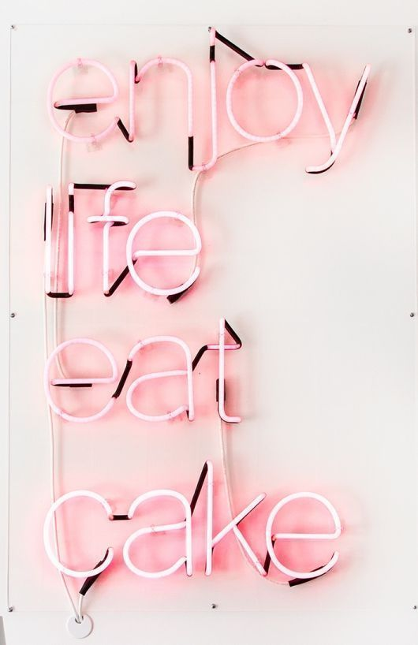

| Favorite Hobbies | |
|---|---|
| Netflix | Photography |
| Sleeping | Shopping |
I am a Psychology major at the University of Georgia and I am graduating class of 2018 in May.
I have a passion for photography and laying in bed, watching Netflix.
I also love movies, I have a passion for film as well, mostly old movies such as: Breakfast at Tiffany's. It's a classic.
I also love food, I am a fan of desert and all things Italian.
I am a huge fan of Vogue magazine and I love fashion and black and white images.
I love to travel as well. This past summer, I went to Italy with the Cortona Study Abroad program, where I took over 3,000 pictures and expanded on my photography skills
In the future, hopefully, I will get to travel throughout the rest of Europe, or hopefully visit my relatives in Greece.
Building this website was fun, but one thing about me is that I do not like to talk about myself, I rather show pictures.
I am a visual learner :)
Sleep is a necessity...

Sources for images: https://www.glamour.com/story/breakfast-at-tiffanys-problems
https://studiodiy.com/2015/12/04/sugar-fix-cake-monkey/?crlt.pid=camp.7daBouvq7Voe&utm_content=buffer22363&utm_medium=social&utm_source=pinterest.com&utm_campaign=buffer
https://twitter.com/_MagazineCovers